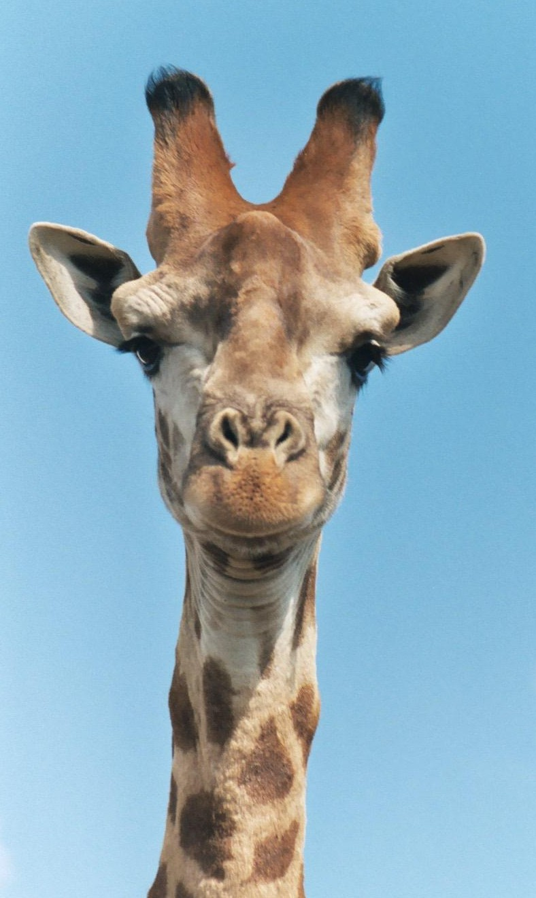

Жираф
_male_(7068054987),_crop_&_edit.jpg)
Научная классификация
Домен: Эукариоты
Царство: Животные
Тип: Хордовые
Класс: Млекопитающие
Отряд: Китопарнокопытные
Семейство: Жирафовые
Род: Жирафы
Вид: Жирафы
Жира́ф (лат. Giraffa camelopardalis; от араб. زرافة зарафа) — парнокопытное млекопитающее из семейства жирафовых. Является самым высоким
наземным животным планеты.
Характеристика
Подошва передней лапы-ладони енота
Самцы жирафа достигают высоты до 5,5—6,1 м (около 1/3 длины составляет шея) и весят до 900—1200 кг. Самки, как правило, немного меньше и легче.
Шея у жирафов необычайно длинная, и это несмотря на то, что у них, как и почти у всех других млекопитающих, лишь семь шейных позвонков.
Большой рост увеличивает нагрузку на систему кровообращения, прежде всего в отношении кровоснабжения головного мозга. Поэтому сердце у
жирафов особенно сильное. Оно пропускает 60 л крови в минуту, весит 12 кг и создаёт давление, которое в три раза выше, чем у человека. Тем не
менее оно не смогло бы вынести перегрузки при резком опускании и поднятии головы жирафа. Чтобы такие движения не приводили к гибели
животного, кровь жирафа гуще, чем у человека, и имеет вдвое более высокую плотность кровяных телец. Помимо этого, у жирафа имеются особые
запирающие клапаны в большой шейной вене, прерывающие поток крови таким образом, что сохраняется давление в главной артерии, снабжающей мозг.
Тёмный язык жирафа очень длинный и мускулистый: жираф может высовывать его на 45 см и способен захватывать им ветки.
Рисунок на шерсти состоит из тёмных пятен, выделяющихся на фоне более светлой базовой окраски, и у каждого жирафа
индивидуален, как у человека отпечатки пальцев. Нижняя часть тела у жирафа более светлая и без пятен.
Обычно голова жирафа, независимо от пола, увенчана парой покрытых кожей и шерстью рожек (оссиконов), утолщенных на
концах. Но изредка встречаются особи с двумя парами оссиконов. А нередко посреди лба имеется своеобразный костный
нарост, который по ошибке можно принять за ещё один — непарный — рог.
Чёрные глаза окаймлены густыми ресницами, уши короткие. Жирафы обладают острым зрением, слухом и обонянием, что
позволяет им заблаговременно замечать опасность.
Хорошему обзору местности способствует, конечно же, и большой рост. Своих высоких сородичей жирафы могут видеть на расстоянии до километра.
Жирафы способны быстро бегать и при необходимости пускаются в галоп, достигая скорости 55 км/ч, то есть на коротких
дистанциях могут перегнать скаковую лошадь. Однако, как правило, ходят не спеша, передвигая одновременно оба правых
копыта, затем оба левых. Из-за большой массы и тонких ног жирафы могут ходить только по твёрдой поверхности. Болотистых пространств они
избегают, а реки часто представляют непреодолимую преграду для жирафов. Примечательно и то, что эти на первый взгляд громоздкие и
неповоротливые животные умеют и прыгать, преодолевая даже барьеры высотой 1,85 м.